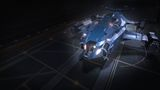

Top speed / boost
183 / 305 m/s
The Crusader keeps the Alliance family's three military slots and tough hull, then adds a ship-launched-fighter bay and a three-seat multicrew cockpit. It trades raw speed for a crew platform that fights on two fronts simultaneously. The slowest and least-shielded of the trio, its solo numbers are modest — but with a deployed fighter and a gunner aboard it becomes a genuine force multiplier the Chieftain and Challenger can't match.

This ship's 1–100 suitability rating reflects its fully-engineered fit for this role, scored against every ship in the role. See how ships are rated.
The Alliance Crusader is the trio's crewed gunboat. It shares the chassis, the three military slots and the tough hull, but its defining features are a built-in ship-launched-fighter bay and a three-seat cockpit for multicrew. It's designed to fight as a team: you fly and shoot, a gunner mans turrets or the SLF, and a launched fighter adds a third angle of attack.
The cost is pace. The Crusader is the slowest of the three Alliance hulls and carries the lowest base shield, so flown solo it's the least dynamic of the family. But with a fighter deployed and a gunner aboard, it becomes a force multiplier — effectively two-and-a-half ships in one hull — which is exactly the niche the Chieftain and Challenger don't fill.
Crewed and wing combat: multicrew sessions with a friend gunning, NPC-fighter support in CZs and RES, and any fight where a launched fighter splitting enemy attention turns the tide.
Four things define the Crusader as a combat ship:
Solo, the Crusader is the weakest Alliance hull — slowest, lowest shield, and its real strength (crew and SLF) is partly idle without a gunner. Its DPS and agility trail the Chieftain. It only reaches its potential as a crewed or fighter-supported platform; if you fly alone and want the best Alliance combat ship, take the Chieftain.
Both tables rate ships for the combat role specifically. The role column is the hardpoint loadout — the raw weapon mounts behind the damage.
| Ship | Class | Hardpoints | Pros & cons vs Alliance Crusader | Rating |
|---|---|---|---|---|
| Krait Mk II | Medium | 3L 2M | SLF bay too, plus bigger guns and more agilityNo military slots; pricier | 90 |
| Alliance Chieftain | Medium | 2L 1M 3S | Far more agile and faster; bigger main gunsNo SLF bay; 2 crew only | 88 |
| Alliance Challenger | Medium | 1L 3M 3S | Tankier; more mounts; better shieldsNo SLF bay; 2 crew only | 86 |
| Corsair | Medium | 3L 3M | Six guns; modern; fasterNo military slots or SLF | 85 |
| Federal Assault Ship | Medium | 2L 2M | Fast, agile Federal brawlerFederal rank; no SLF | 84 |
| Python | Medium | 3L 2M | Versatile; roomy; SLF-capableLess focused; no military slots | 83 |
| Federal Gunship | Medium | 1L 4M 2S | Seven mounts; SLF bay; very toughEven slower; Federal rank gate | 82 |
| Alliance Crusader this | Medium | 1L 2M 3S | — this hull (baseline) | 80 |
The Crusader's niche is crew-and-fighter combat. The Krait Mk II offers an SLF bay with more agility and bigger guns, so for fighter-supported solo play it's often the better pick; the Crusader's edge is the Alliance tank chassis plus three crew seats for true multicrew. In a coordinated team it shines; flown solo it trails its own siblings.
| Ship | Class | Hardpoints | Pros & cons vs Alliance Crusader | Rating |
|---|---|---|---|---|
| Federal Corvette | Large | 2H 1L 2M 2S | SLF bay, huge crew, apex firepower and tankFederal rank; ~187M Cr; large pad | 98 |
| Imperial Cutter | Large | 1H 2L 4M | SLF bay; vast shields; multicrewImperial rank; poor agility; large pad | 91 |
| Anaconda | Large | 1H 3L 2M 2S | SLF bay; vast internals; multicrewPonderous; costly; large pad | 88 |
| Federal Gunship | Medium | 1L 4M 2S | Medium SLF gunboat with seven mountsFederal rank; sluggish | 82 |
| Type-10 Defender | Large | 4L 3M 2S | SLF bay; turret tank; superb AXVery slow; large pad | 78 |
Most fighter-bay platforms are large ships that need a pad and often a rank grind. The Crusader is the cheap, medium-pad way into SLF-and-multicrew combat — not the best fighter carrier, but the most accessible one with a genuine tank chassis underneath.
At ~22M Cr the Crusader sits between the Chieftain and Challenger in price, with no rank or permit gate. The fighter bay and a good NPC pilot are part of the build cost — budget for them, since the SLF is central to the ship's value.
A full combat fit with three military-slot reinforcements, a shield, and the fighter bay adds up, but stays well under a large fighter-carrier's cost — the Crusader is the budget route to crewed combat.
The SLF bay and a high-rank NPC pilot are integral, not optional, on the Crusader — the ship is built around them. Factor both into the build from the start.
A crewed gunboat fit with a fighter bay and three military slots. Initial is buy-only; A-rated is the combat-ready baseline; Engineered applies the house combat pattern with reinforcement and an SLF.
| Slot | Initial · buy-only | A-Rated · no eng | Engineered |
|---|---|---|---|
| Hardpoints | |||
| Large 1 | Multi-Cannon 3 | Multi-Cannon 3 | MC 3 — Overcharged + Corrosive |
| Medium 1 | Pulse Laser 2 | Beam Laser 2 | Beam 2 — Thermal Vent |
| Medium 2 | Multi-Cannon 2 | Multi-Cannon 2 | MC 2 — Overcharged |
| Small 1 | Pulse Laser 1 | Pulse Laser 1 (turret) | Pulse 1 turret — for gunner |
| Small 2 | — | Multi-Cannon 1 (turret) | MC 1 turret — for gunner |
| Small 3 | — | Pulse Laser 1 | Pulse 1 — Efficient |
| Utility Mounts | |||
| Utility 1 | Shield Booster | Shield Booster | Shield Booster — Heavy Duty |
| Utility 2 | — | Shield Booster | Shield Booster — Heavy Duty |
| Utility 3 | — | Chaff Launcher | Chaff Launcher |
| Utility 4 | — | Heat Sink Launcher | Heat Sink Launcher |
| Core Internals | |||
| Power Plant (6) | E | A | A — Overcharged (G5) |
| Thrusters (5) | E | A | A — Dirty Drive Tuning (G5) |
| FSD (5) | E | A | A — Increased Range (G3) |
| Life Support (5) | E | D | D — Lightweight |
| Power Distributor (6) | E | A | A — Charge Enhanced (G5) |
| Sensors (4) | E | D | D — Lightweight |
| Fuel Tank (4) | C | C | C |
| Military Slots | |||
| Military 1 (4) | Hull Reinforcement | Hull Reinforcement 4 | HRP 4 — Heavy Duty |
| Military 2 (4) | — | Hull Reinforcement 4 | HRP 4 — Heavy Duty |
| Military 3 (4) | — | Module Reinforcement 4 | Module Reinforcement 4 |
| Optional Internals | |||
| Optional 6 | Shield Generator 6 | Fighter Hangar 6 | Fighter Hangar 6 |
| Optional 5 | Cargo Rack 5 | Shield Generator 5 (bi-weave) | Bi-Weave 5 — Resistance Augmented |
| Optional 3 | — | Shield Cell Bank 3 | SCB 3 |
| Optional 3 | — | Hull Reinforcement 3 | HRP 3 — Heavy Duty |
| Optional 2 | — | Module Reinforcement 2 | Module Reinforcement 2 |
| Optional 2 | — | Shield Cell Bank 2 | SCB 2 |
| Optional 1 | — | Detailed Surface Scanner | Heat Sink storage |
Fit a fighter hangar and a couple of turret weapons a gunner can control, alongside your own gimballed/fixed main guns. The Crusader's value is teamwork — a deployed SLF plus a gunner roughly doubles its effective output.
Buy the hull and fit a shield, fill the military slots with hull reinforcement, and add the fighter bay early.
Arm the large and medium mounts for yourself; put a turret or two on the smalls for a gunner.
Even solo with an NPC fighter pilot it's CZ-ready; with a human gunner it's far stronger.
A-rating priority for a crewed gunboat:
An SLF draws meaningful power — A-rate the plant before fitting the fighter hangar, or you'll be juggling power priorities mid-fight.
The house combat pattern with reinforcement and a fighter bay. Pin blueprints for remote G1→G5 application; visit in person for experimentals.
| Module | Blueprint | Experimental | Engineer |
|---|---|---|---|
| Power Plant | Overcharged (G5) | Thermal Spread | Hera Tani / Marsha Hicks |
| Thrusters | Dirty Drive Tuning (G5) | Drag Drives | Professor Palin / Mel Brandon |
| Multi-Cannons | Overcharged (G5) | Corrosive Shell (one) | Tod McQuinn |
| Beam Laser | Efficient (G5) | Thermal Vent | Broo Tarquin |
| Power Distributor | Charge Enhanced (G5) | Super Conduits | The Dweller |
| Bi-Weave Shield | Resistance Augmented (G5) | Fast Charge | Lei Cheung |
| Hull Reinforcement | Heavy Duty (G5) | Deep Plating | Selene Jean |
| Shield Boosters | Heavy Duty (G5) | Super Capacitors | Didi Vatermann |
Moderate — standard combat G5s plus Heavy-Duty reinforcements. The fighter bay itself isn't engineered. With a complete inventory this is spend, not farm. Ask for exact per-blueprint counts if needed.
Approximate progression across the three states (figures are representative, not exact rolls):
| Stat | Initial | A-rated | Engineered |
|---|---|---|---|
| Top speed (boost) | 305 m/s | 305 m/s | ~370 m/s |
| Armour (eff.) | 540 | 540 | ~3,000+ |
| Shield (MJ) | ~190 | ~270 | ~600 |
| Effective firepower | medium | high (with SLF) | high (SLF + gunner) |
| Force multiplier | SLF | SLF + crew | SLF + crew |
Engineered, the Crusader becomes a tough crewed gunboat: effective armour into the thousands, a usable shield buffer, and — crucially — an output that climbs sharply once a fighter is deployed and a gunner is aboard. Its solo numbers are modest; its crewed numbers are formidable.
Any CZ or Haz RES suits it, best with a friend aboard. Around your home base, crewed CZ and massacre payouts double as Imperial-standing progress.
The Alliance Crusader is the budget crewed gunboat: the Alliance tank chassis and three military slots, plus a fighter bay and three crew seats the Chieftain and Challenger lack. Solo it's the weakest of the trio, but with a deployed fighter and a gunner aboard it becomes a genuine force multiplier — the most accessible way into multicrew, SLF-supported combat on a medium pad.
Figures on this page are verified against the sources below.